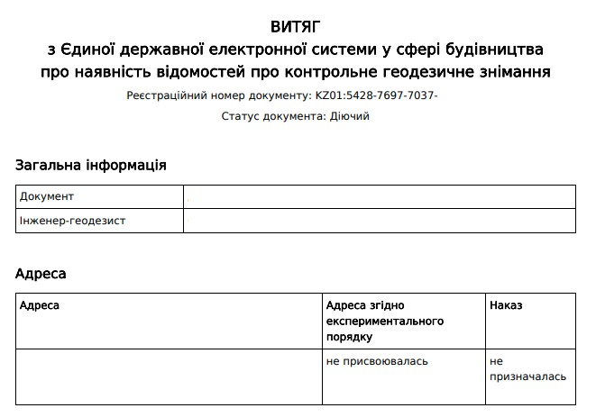

Відновлення меж ділянки
Винесення меж земельної ділянки в натуру та встановлення межових знаків.
- Встановлення межових знаків
- Відновлення втрачених меж
- Закріплення координат
- Консультації
Виконуємо геодезичні роботи та пов'язані з ними послуги на території Тернопільської та сусідніх областей. Маємо великий досвід роботи з об'єктами різної складності - від звичайних будинків до великих заводів.
Замовити

Виконуємо повний спектр геодезичних робіт на території Тернопільської та сусідніх областей. Працюємо як із приватними замовниками, так і з будівельними компаніями, підприємствами та організаціями.
Наш досвід охоплює об'єкти різної складності — від приватних земельних ділянок і житлових будинків до промислових комплексів та масштабних інженерних споруд.
Винесення меж земельної ділянки в натуру та встановлення межових знаків.

Топографічна зйомка земельних ділянок, будинків, доріг, комунікацій та інших об'єктів.

Геодезичний супровід приватних, комерційних та промислових об'єктів.

Контрольне топографо-геодезичне знімання для для введення в експлуатацію об'єктів класу наслідків СС2 і СС3 через ЄДЕССБ.
Вартість залежить від площі ділянки, місця виконання робіт, складності рельєфу та призначення зйомки. Для розрахунку вартості достатньо зателефонувати або залишити заявку.
Достатньо кадастрового номера земельної ділянки або правовстановлюючих документів. Після уточнення координат межі будуть відновлені в натурі(на місцевості) та закріплені межовими знаками.
Працюємо у Тернопільській, Львівській, Івано-Франківській, Хмельницькій, Волинській, Рівненській, Закарпатській та Чернівецькій областях.
Використовуємо сучасне GNSS-обладнання та професійні геодезичні прилади, що забезпечують високу точність вимірювань.
Терміни залежать від виду робіт та площі об'єкта. Більшість замовлень виконується максимально оперативно після погодження деталей.
Виконуємо геодезичні роботи на території західної України.